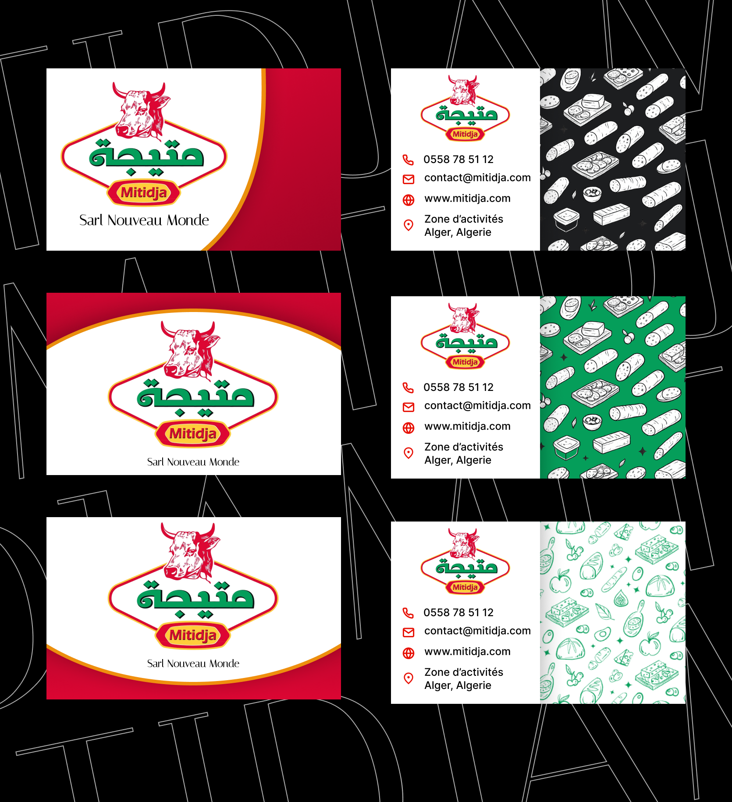

MITIDJA - Reviving a Legacy Through Design
Mitidja is more than a charcuterie brand, it carries local heritage rooted in Algeria. The challenge was not to reinvent it, but to modernize its presence while preserving its identity.
1. Understanding the Brand - Heritage First
The process started by studying Mitidja's history, products, and positioning. The goal was clear: maintain the authenticity of the brand while bringing it into a more contemporary and cohesive visual system.

2. Digital Revival - Rebuilding the Visual Language
I focused on revamping the brand's digital assets, creating a more unified and professional identity. This meant refining layouts, typography, and visual hierarchy to ensure consistency across touchpoints.


3. Structured Design - Building Core Materials
With a clear direction, I developed a full set of print-ready assets for campaigns and daily communication: A5 flyers, a complete product catalogue, a tri-fold brochure, and business cards aligned with the new identity. Each piece was designed to communicate clearly while reinforcing the brand's credibility.



4. Physical Presence - Expanding Brand Visibility
Beyond standard materials, I extended the identity into larger formats: roll-up banners for events and in-store presence, plus posters and supporting print assets. This ensured the brand could stand out in both retail and promotional environments.
Closing
Mitidja's redesign was not about changing what the brand is, it was about elevating how it is seen, understood, and experienced.